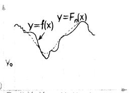
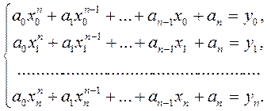

ІНТЕРПОЛЮВАННЯ ЗАЛЕЖНОСТЕЙ
Найпростіша задача інтерполювання формулюється так: нехай на відрізку [а,b] задано n+1 точок і відомі значення деякої функції
в точках
(1)
Потрібно обчислити значення цієї функції в деякій точці х, яка належить заданому відрізку, але не збігається з жодним із значень
Очевидним способом для розв'язування цієї задачі є обчислення значення функції за допомогою її аналітичного виразу. Але його можна застосувати лише в тому випадку, коли аналітичний вираз функції  придатний для проведення обчислень. Досить часто, аналітичний вираз функції буває навіть невідомим (наприклад, коли результати отримані під час проведення дослідів). У таких випадках застосовують особливий прийом— побудову за початковими даними (1) функції наближення ,яка належить до одного класу із функцією
придатний для проведення обчислень. Досить часто, аналітичний вираз функції буває навіть невідомим (наприклад, коли результати отримані під час проведення дослідів). У таких випадках застосовують особливий прийом— побудову за початковими даними (1) функції наближення ,яка належить до одного класу із функцією  і аналітичний вираз якої можна використовувати для обчислень, вважаючи наближено, що (2)
і аналітичний вираз якої можна використовувати для обчислень, вважаючи наближено, що (2)

Y

Класичний підхід до розв'язування задачі побудови функції наближення ґрунтується на вимозі строгого збігу значень функцій і  у точках , тобто:
у точках , тобто: 
(3)
У цьому випадку процес знаходження функції наближення називається інтерполяцією (або інтерполюванням), а точки вузлами інтерполяції.
Функція називається інтерполяційною функцією, а формула (2), за допомогою якої обчислюють значення функції  на проміжку [а;b] — інтерполяційною формулою.
на проміжку [а;b] — інтерполяційною формулою.
Геометричний зміст задачі інтерполювання полягає у знаходженні кривої певного типу, яка проходить через задану систему точок i=0,1…,n(див. мал. 1).
Якщо функцію F(x)шукають у вигляді многочлена n-го степеня, то таке інтерполювання називають параболічним. Воно є найзручнішим, оскільки многочлени прості за формою, не мають особливих точок, можуть набувати довільних значень, і їх легко обчислювати, диференціювати й інтегрувати .
У деяких випадках доцільніше використовувати інші класи інтерполяційних функцій. Наприклад, якщо функція періодична, то природно функцію вибрати із класу тригонометричних многочленів, а якщо функція  перетворюється в нескінченість у заданих точках або в їх околі, то доцільно функцію
перетворюється в нескінченість у заданих точках або в їх околі, то доцільно функцію  вибрати із класу раціональних функцій.
вибрати із класу раціональних функцій.
Тут ми розглядаємо задачу параболічного інтерполювання. Нехай дано значення функції (1) у вузлах інтерполювання .Потрібно побудувати многочлен
(4)
степеня n, який задовольняв би умови (3)
Для визначення n+1 коефіцієнтів многочлена (4), який задовольняє умовам (3), запишемо систему n+1 лінійних рівнянь виду:

Ця система мас єдиний розв'язок, бо її визначник не дорівнює нулю, оскільки вузли різні.
Тому задача параболічного інтерполювання має єдиний розв'язок Хоча інтерполяційний многочлен (4), який задовільняє умовам (3), є єдиним, існують різні форми його запису.
Інтерполяційний многочлен будують тоді, коли:
1) функцію для деяких значень аргументу задано таблично, а потрібно знайти її значення для значень аргументу, яких немає в таблиці;
- функцію задано графічно, наприклад, за допомогою самописного приладу, а потрібно знайти її наближений аналітичний вираз;
- функцію задано аналітично, але її вираз досить складний і незручний для проведення різних математичних операцій (диференціювання, інтегрування тощо).